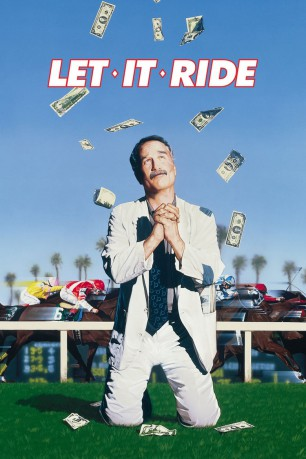
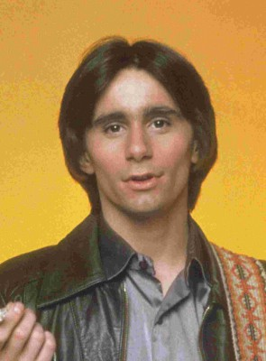
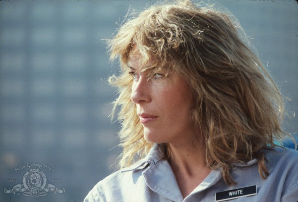
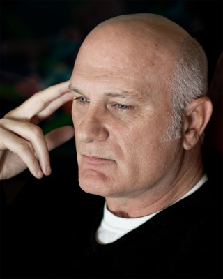

#10822 Alles auf Sieg
Alternativ: Let It Ride (Englischer Titel)
 
 IMDB-Wertung: 6.8 / 10
IMDB-Wertung: 6.8 / 10  Metascore: 33
Metascore: 33 
Jay Trotter hat sein ganzes Leben auf diesen Tag gewartet. Er hat einen heißen Wett-Tipp für ein Pferd, das alle schon beim Abdecker sehen. Aber wie Spezialisten des Pferderennens sagen: "Was ich weiß ist, dass ich nichts weiß." Eines jedoch ist sicher, dass Richard Dreyfuss, David Johansen, Teri Garr und die anderen diesen Film zu einer gelungenen Komödie machen. Also wirf die DVD ein und setz Alles auf Sieg. Die Schauspieler geben "den Lebenszielen" neuen Sinn und schließlich wird sich jeder verwundert und berührt fragen: "Wenn jedes Pferd mal seinen guten Tag hat, warum kann dann nicht jeder Mensch einen haben?"
Jahr: 1989
Dauer: 86 Minuten
FSK: 6
Land: USA Studio: Paramount PicturesTonspuren:
Untertitel:
Auflösung: 1080p (1920x1080) Größe: 4874 MB
Genre: Action, Komödie
Regisseur: Joe Pytka
Drehbuch: Jay Cronley, Nancy Dowd
Soundtrack: Giorgio Moroder
Darsteller:
 Richard Dreyfuss als Jay Trotter
Richard Dreyfuss als Jay Trotter- David Johansen als Looney
 Teri Garr als Pam
Teri Garr als Pam Jennifer Tilly als Vicki
Jennifer Tilly als Vicki Allen Garfield als Greenberg
Allen Garfield als Greenberg Richard Edson als Johnny Casino
Richard Edson als Johnny Casino- David Schramm als Lufkin
- Joseph Walsh als Vibes
-  Ralph Seymour als Sid
 Cynthia Nixon als Evangeline
Cynthia Nixon als Evangeline- Robert Towers als Mickey Jax
- Michelle Phillips als Mrs. Davis
 Robbie Coltrane als Ticket Seller
Robbie Coltrane als Ticket Seller Tony Longo als Simpson
Tony Longo als Simpson-  Mary Woronov als Quinella
-  S.A. Griffin als Trainer
- Myra Turley als Patron in Chinese Restaurant
- David Landsberg als Patron in Chinese Restaurant
- Richard Lee-Sung als Patron in Chinese Restaurant
- Rodney Kageyama als Patron in Chinese Restaurant
- Omar Caraballo als Police Officer with Reardon
- Tommy Bull als Bit part (uncredited)
- Natalie Dreyfuss als Abby (uncredited)
- P.B. Floyd als Blood Bank Donor (uncredited)
- Ray Nikolaison als Racetrack Bettors (uncredited)
- Edward Walsh als Marty
- John Roselius als Reardon
- Richard Dimitri als Tony Cheeseburger
- Trevor Denman als Race Track Announcer
- Tony Fraietta als Louie Kidder
- Sid Raymond als Solly Friedman
- Darci Osiecky als Sheila
- Joe Petrullo als Maitre d'
- Lee Sandman als Businessman
- Ron Max als Man in Looney's Cab
- Rosanne Covy als Woman in Looney's Cab
- Dee Dee Deering als Woman with Cane
- Rachel Rogers als Woman at Paddock Rail
- Geraldine Dreyfuss als Woman During Chase
- Robert Baron als Hugh Sipes
- Tom Kouchalakos als Customer
- W. Paul Bodie als Customer
- Martin Garner als Rudy
- Kenneth Russell als Shoeshine Man
- Rundo als Patron in Chinese Restaurant
- Joycee Katz als Patron in Chinese Restaurant
- Ellerine Harding als Patron in Chinese Restaurant
- Darrah Meeley als Patron in Chinese Restaurant
- Ralph Ahn als Patron in Chinese Restaurant
- Larry Litt als Waiter in Jockey Club
Datei: X:\1989\Alles auf Sieg (1989, FSK6, 1920x1080).mkv seit 09.03.2019
Festplatte: HD 1987-1991
 Es gibt insgesamt 54 Filme in der Gruppe '1989'
Es gibt insgesamt 54 Filme in der Gruppe '1989'